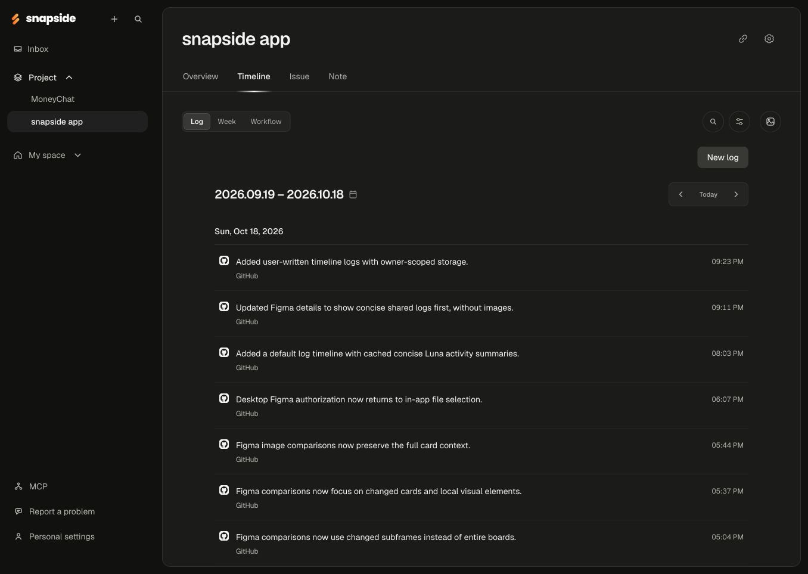
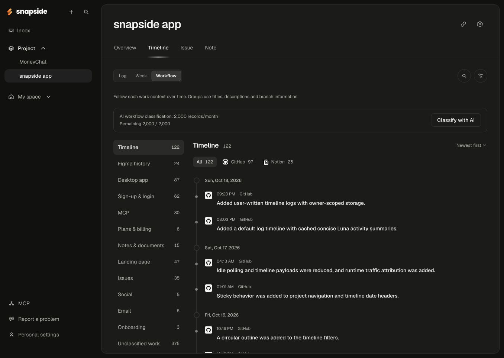
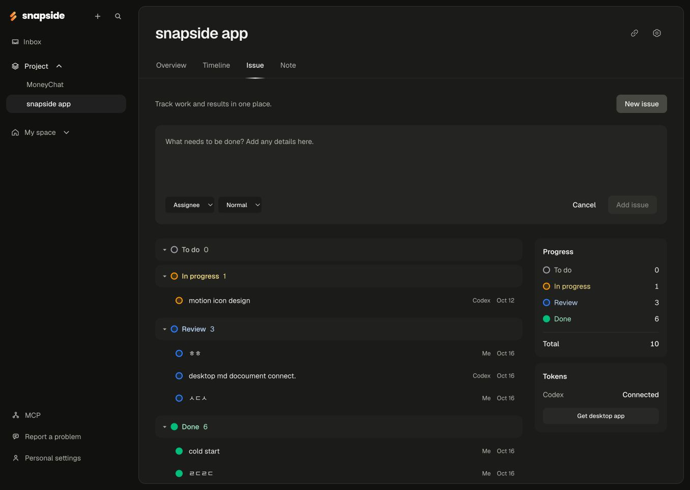
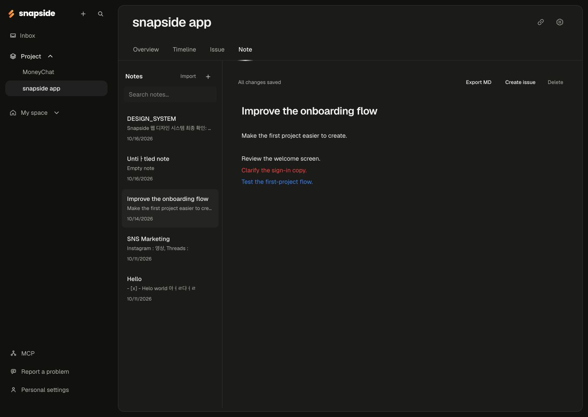
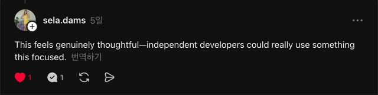
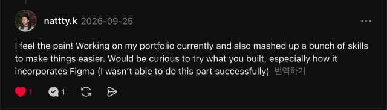

Workflow記録を作業ごとに
記録を作業ごとに
まとめました。
- 問題仮説
- 日付をまたぐ同じ作業は探しにくい。
- 判断と実装
- 日付表示を残し、初期Workflowをルールベースで分類。
- 検証課題
- 探索時間・正答率・未分類を確認する。
実装の差分5171d81
 Snapside
Snapside
複数ツールの変更をたどる個人プロジェクト。UX/UI、実装、公開後の計測を担当しました。





AIで一人で開発する中で、作業の記録をよく忘れました。すでに残っている変更から文脈をたどり直す方法を設計しました。
関連記事、内部リンク、多言語メタデータ、サイトマップを整備しました。
2026.10.11–11.07 · Web search
ウェブのアクティブユーザー
GA4 · All users · 2026.09.20–10.17

その大変さ、分かります！私もちょうどポートフォリオを作っていて、作業を楽にするためにいろいろなスキルを組み合わせています。作られた製品、特にFigma連携を試してみたいです（私はこの部分をうまく実現できませんでした）。
@nattty.k · ThreadsGA4 · Organic Search · 2026.09.20–11.03 · 内部・テスト除外未確認
登録イベントは1件。実際の登録、変更の探索、再訪とのつながりは未確認です。